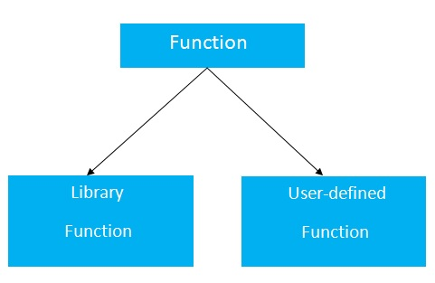

The function in 'c' language is also known as procedure or subroutine in other programming languages.
To perform any task, we can create function. A function can be called many times. It provides modularity and code reusability.
There are many advantages of functions.
By creating functions in 'c', you can call it many times. So we don't need to write the same code again and again.
It makes the code optimized, we don't need to write much code.
Suppose, you have to check 3 numbers (781, 883 and 531) whether it is prime number or not. Without using function, you need to write the prime number logic 3 times. So, there is repetition of code.
But if you use functions, you need to write the logic only once and you can reuse it several times.
There are two types of functions in 'c' programming:
Library Functions: are the functions which are declared in the 'c' header files such as scanf(), printf(), gets(), puts(), ceil(), floor() etc.
User-defined functions: are the functions which are created by the 'c' programmer, so that he/she can use it many times. It reduces complexity of a big program and optimizes the code.

The syntax of creating function in 'c' language is given below:
A 'c' function may or may not return a value from the function. If you don't have to return any value from the function, use void for the return type.
Let's see a simple example of 'c' function that doesn't return any value from the function.
Example without return value:
If you want to return any value from the function, you need to use any data type such as int, long, char etc. The return type depends on the value to be returned from the function.
Let's see a simple example of 'c' function that returns int value from the function.
Example with return value:
In the above example, we have to return 10 as a value, so the return type is int. If you want to return floating-point value (e.g. 10.2, 3.1, 54.5 etc), you need to use float as the return type of the method.
Now, you need to call the function, to get the value of the function.
A 'c' function may have 0 or more parameters. You can have any type of parameter in 'c' program such as int, float, char etc. The parameters are also known as formal arguments.
Example of a function that has 0 parameter:
Example of a function that has 1 parameter:
Example of a function that has 2 parameters:
If a function returns any value, you need to call function to get the value returned from the function. The syntax of calling a function in 'c' programming is given below:
1) variable: The variable is not mandatory. If function return type is void, you must not provide the variable because void functions doesn't return any value.
2) function_name: The function_name is name of the function to be called.
3) arguments: You need to provide arguments while calling the 'c' function. It is also known as actual arguments.
Example to call a function:
Let's see the simple program of 'c' function that doesn't return any value from the function.
hello 'c' programming hello 'c' programming hello 'c' programming
Let's see the simple program of function in 'c' language.
8 27